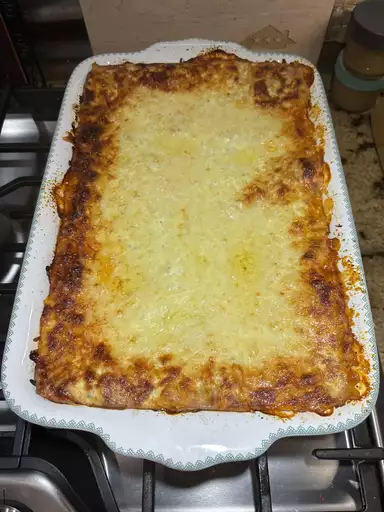
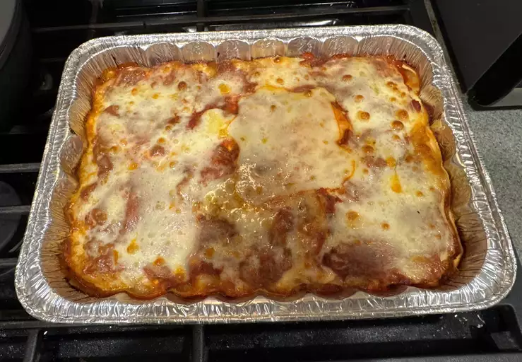

Lasagna

If you don't like Mondays, then odds are that you will really like this recipe! Layers of meat, pasta and cheese. Lots of cheese. Hell yeah! I'm about to get some myself right now!
Ingredients
You'd think that the three things that I just mentioned earlier would be
enough to carry out this magnificent nutricious masterpiece, but alas!
There are some other ingrediets which will make this possible
- Meat: Italian Sausage and lean ground beef
- Onion and garlic: An onion and two cloves of
garlic will add tons of flavor
- Sugar: Two tablespoons of white sugar to add some
sweetness and enhance the flavor
- Spices and seasonings:For this recipee you will
need:
- Fresh parsley
- Dried basil leaves
- Salt
- Italian seasoning
- Fennel seeds
- Black pepper
- Lasagna noodles
- Cheeses: to make this Lasagna extra-decaden you'll
need three kinds of cheese:
- Parmesan
- Mozzarella
- Ricotta
- An egg: Yes, only one. That will help gind the
ricotta cheese so that it doesn't ooze out
Directions
- Gather all your ingredients
- Cook sausage, ground beef, onion and garlic in a Dutch oven over
medium heat until well browned.
- Stir in crushed tomatoes, tomato sauce, tomato paste and water.
Season with sugar, 2 tablespoons parsley, basil, 1 teaspoon salt,
Italian seasoning, fennel, seeds and pepper. Simmer, covered, for
about 1 hours 30 minutes, stirring ocasionally.
- Bring a large pot of lightly salted water to a boil. Cook Lasagna
noodles in boiling water for 8 to 10 minutes. Drain noodles, and
rinse with cold water.
- In a mixing bowl, combine ricotta cheese with egg, remaining 2
tablesppons parsley, and half teaspoon salt.
- Preheat the oven to 375 F (190 C)
- To assemble, spread 1 ½ cups of meat sauce in the bottom of a
9x13-inch baking dish. Arrange 6 noodles lengthwise over meat
sauce, overlapping slightly. Spread with 1/2 of the ricotta
cheese mixture. Top with 1/3 of the mozzarella cheese slices.
Spoon 1 ½ cups meat sauce over mozzarella, and sprinkle with
1/4 cup Parmesan cheese.
- Repeat layers, and top with remaining mozzarella and Parmesan
cheese. Cover with foil: to prevent sticking, either spray
foil with cooking spray or make sure the foil does not touch
the cheese.
- Bake in the preheated oven for 25 minutes. Remove the foil
and bake for an additional 25 minutes.
If you managed to carry out this recipe as it was intended, it might end
up like this:




Thanks to John Chandler for this awesome recipee!
Home page